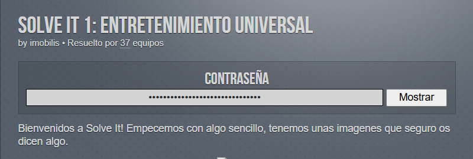
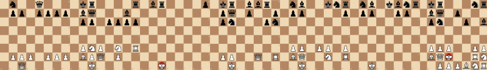
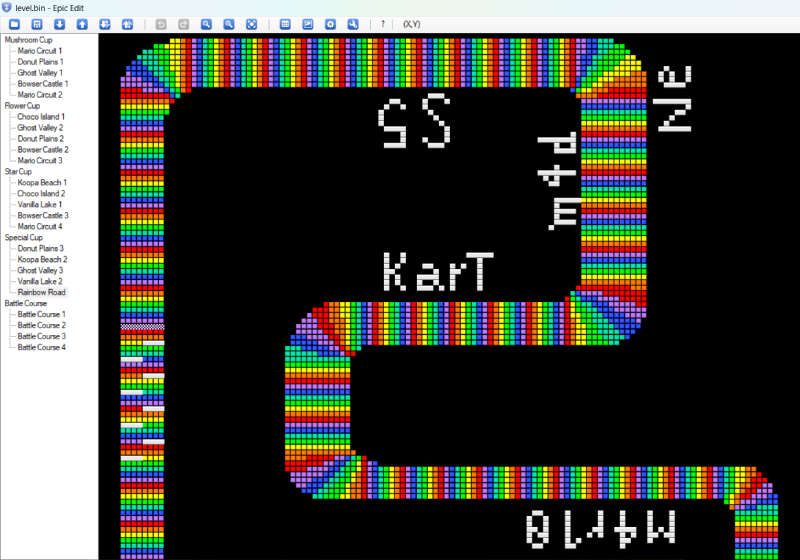
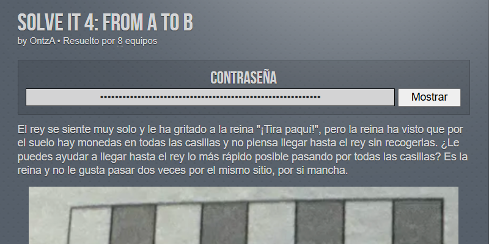
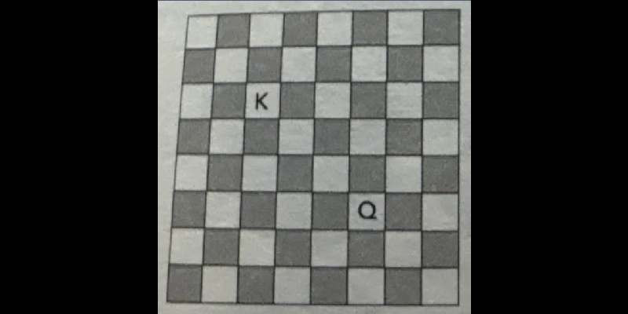
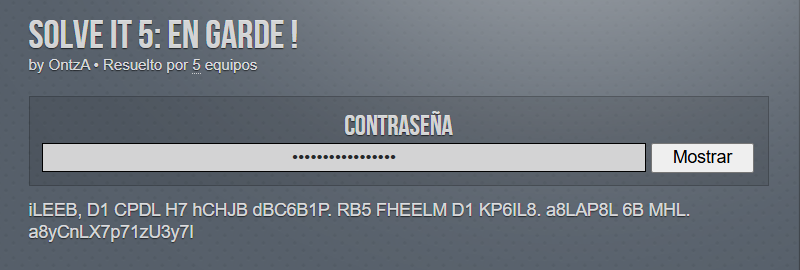

Euskal Encounter 33: Solve It
September 27, 2025 at 4:17 pm
Let's continue with the Solve It modality.
As I did with the Hack It modality, I'm only writing about the levels we passed.
Solve It 1: Universal entertainment
It appears to be a gif, but they were 7 different images.
After getting all seven, we started looking for something strange. We saw the first column and the middle rows of all images empty, and the pieces didn't make any sense.
We thought about Morse. Why not? Nothing. Maybe filling the gaps to obtain a message pasting images in some order? No...
One of us saw it: it was binary, with the pieces being the ones. Easy. The password was a quote from the amazing movie WarGames.
Solve It 2: Born tu run

Now that I'm writing this and reading all again, the title of the level was quite spot on, but then we thought about other topics.
The level contained a binary file to download. With the title and being a tiny (~2 MiB) binary file, we thought about a savefile of some game. What game? We didn't know. We opened with Notepad. Nothing, but we have to try. Then we've searched for some strings reading its hexdump. But... If it was directly a game?
Not going to lie, someone on the Discord server of the Euskal Encounter wrote something about a game 🤷. Time to download some emulators.
After a lot of testing, one of the SNES worked! Shit, it's Mario Kart... Do we have to search for some password inside the game?
Some of us started playing, but after a couple of minutes I was bored and as lazy as I am, I searched for some software to edit this game (no way I was going to spend hours "playing"). I found one, and I could see the all the tracks. One of them hid the password...
Solve It 4: From A to B
Quite easy when you understood what the level is telling you to do. I'm not going to translate what the level is telling us, it's better if I told you directly.
In summary, you have to get a path being the Queen and go to the square of the King, passing for every square of the board without repetitions. But you have to get the quickest one, so it's telling you to get one that makes the less movements.
Time for ChatGPT. We got several, but we had to tell it to search for one that makes 15 movements. Why 15? Someone told us 😅.
Once we knew, we have to enter the password. How to introduce it: chess notation, without capturing the King (yes, we first entered it with the capture).
Solve It 5: En garde!
Common level of text cyphering. Maybe this level should be put as the second level and not the fifth one.
Looking at the letters, and knowing the most used letter on English and Spanish (we discarded other languages) is the letter E, and seing some letter repetitions, we started guessing.
Quite fast, we knew it was on English, so we continued. In a couple of minutes, we cracked it: a quote from the movie The Princess Bride.
With that quote, it was possible to crack the password (it was the second line of the level's text). Unfortunately, the password was wrongly coded, so we had to play with the letters until getting the correct one: Pr1nCe2sAsy05w1sh.
That's been all!